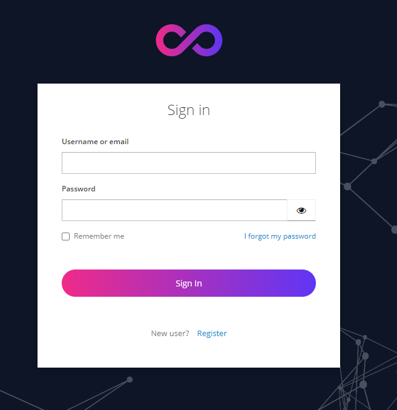
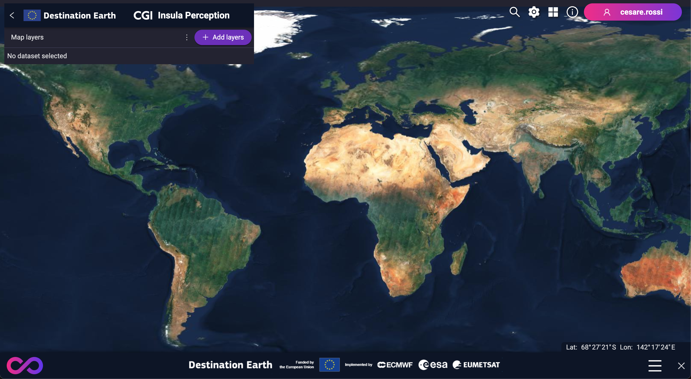
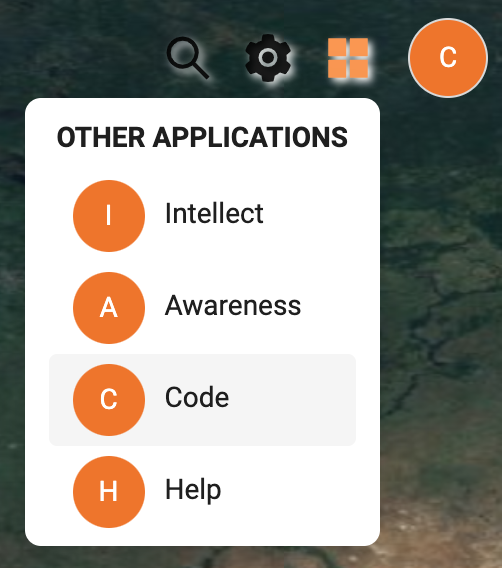
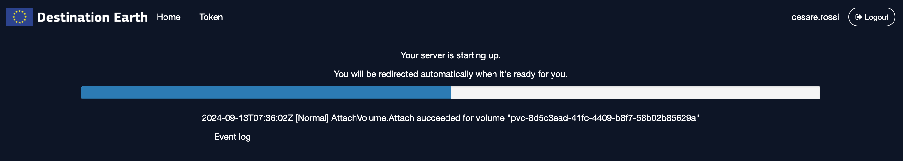
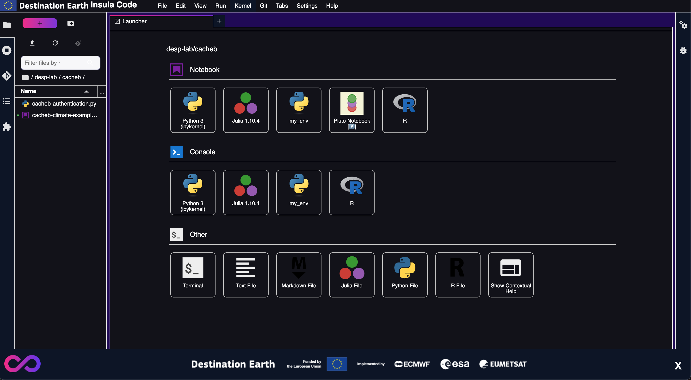

Getting Started
Accessing Insula
Insula can be accessed at <base_url> (see Base URLs).
Upon accessing one of these URLs, a form similar to the following will be displayed. Type your access credentials and press the Sign In button.
Insula Perception
Insula Perception is the Insula’s landing page, showing one of its key features that is the ability to explore, find and exploit a range of data and services related to the Earth Observation.
After entering your credentials and signing in, you will see a page similar to:
Insula Code Lab
Insula Code Lab is accessible by clicking the “Code” button in the Other Application menu on the top right corner:
{kind=link}
After entering your credentials and signing in, you will see a message similar to:
This message indicates that one of two things is happening:
First Time Login: A new private server is being created specifically for you. Additionally, dedicated storage space for your personal data is being established.
Subsequent Logins: A new private server is being created for you. Your dedicated storage space is already available for you. The system will simply link the private server with the existing storage.
This process typically takes only a few seconds, but it may take up to a minute to complete.
Once the provisioning or connection process is finished, you will be directed to the main server interface. This interface will provide you with various options to manage your private server and access your data storage:
